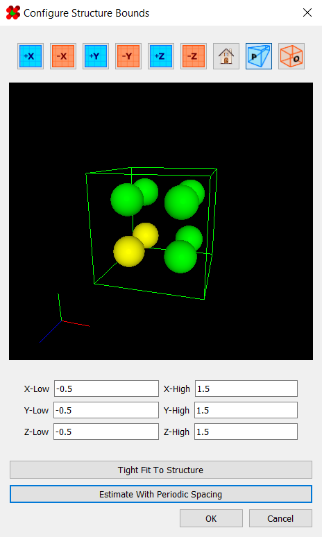
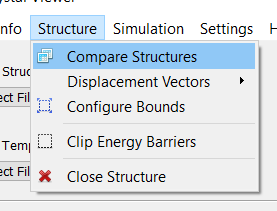

Viewing Structure Properties
The structure properties dialog allows you to view basic information about the currently opened structure:
|

It can be accessed under Info > Structure Properties:
|
This program provides basic tools for viewing and preparing structures for use in simulations.
However, it must be noted that this program is not intended for creating
crystals. As such, you will need to generate crystals using an external program
such as Vesta. You will then
need to export it as an .xyz file (or other compatible file) for
use here.
The structure properties dialog allows you to view basic information about the currently opened structure:
|
It can be accessed under Info > Structure Properties:
|
The bounding box represents the extent of your structure cell. In the viewport, it is visible as a thin, white line:
|
Besides being viewable in the properties viewer, the bounding box can be configured using the "Configure Structure Bounds" dialog.
|
This dialog has three options for setting the bounding box. Firstly, you can set the bounds manually using the line edit fields. Secondly, the "Tight Fit" button automatically sets the bounds to the minimum required to encompass the structure. Finally, the "Estimate With Periodic Spacing" button attempts to set the bounds in a way that preserves the lattice spacing between atoms. This usually gets within a few units of the ideal spacing, and is a good starting point when setting up for a minimizer. |
 |
To access this dialog, simply go to Structure > Configure Bounds:
|
Finally, if the source file already contains bounding box information, a
structure's bounding box will be initialized to that. Reading from an
.xyz file's comment line is also supported, as explained
here.
The program includes support for visually comparing two structures with the "Compare Structures" dialog. This dialog contains two minimal viewers for comparing two structures.
To use it, simply click the "From Current" button, and the state of the current structure in the viewport will be copied over to the corresponding window. Alternatively, you can load a structure directly from a file with the dropdown.
|
The dialog can be accessed under Structure > Compare Structures:
 |